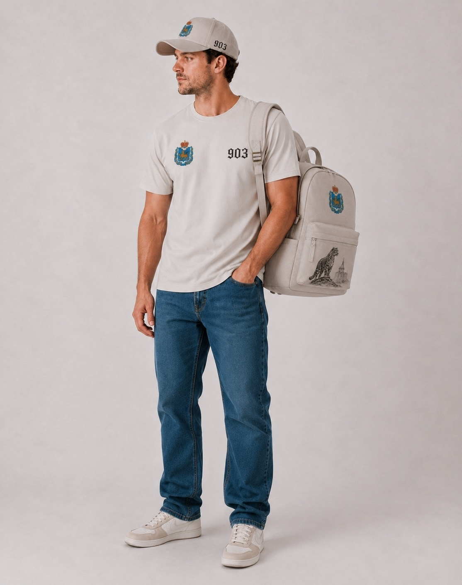
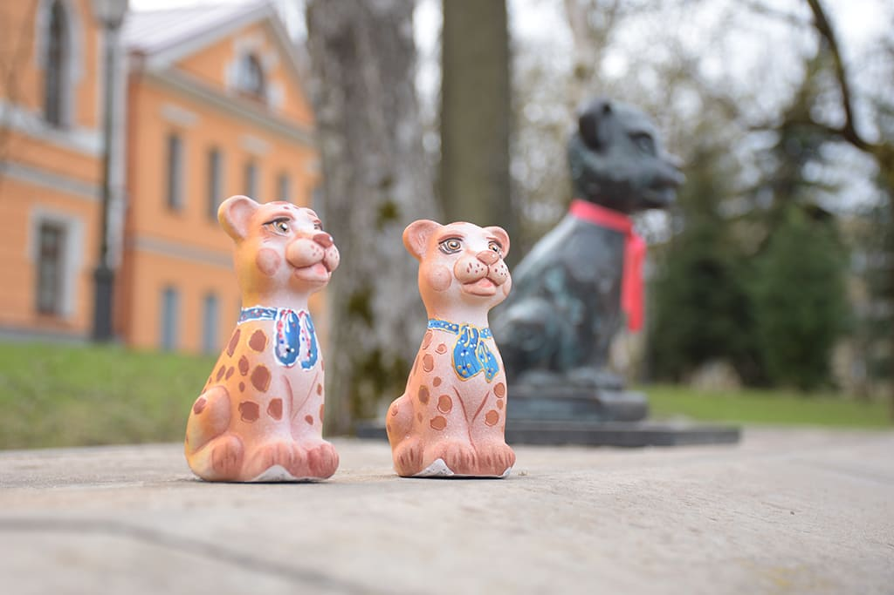
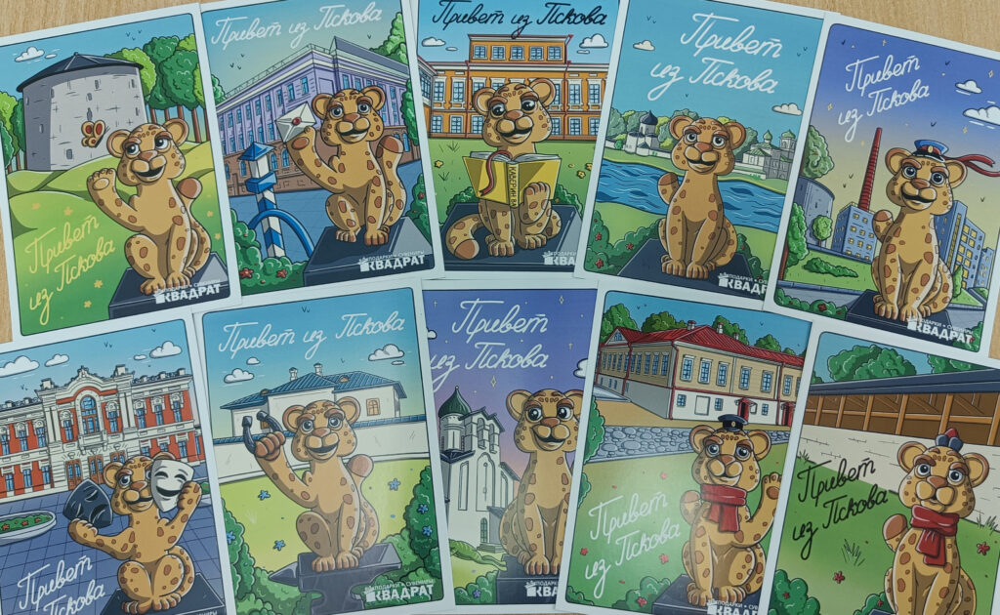
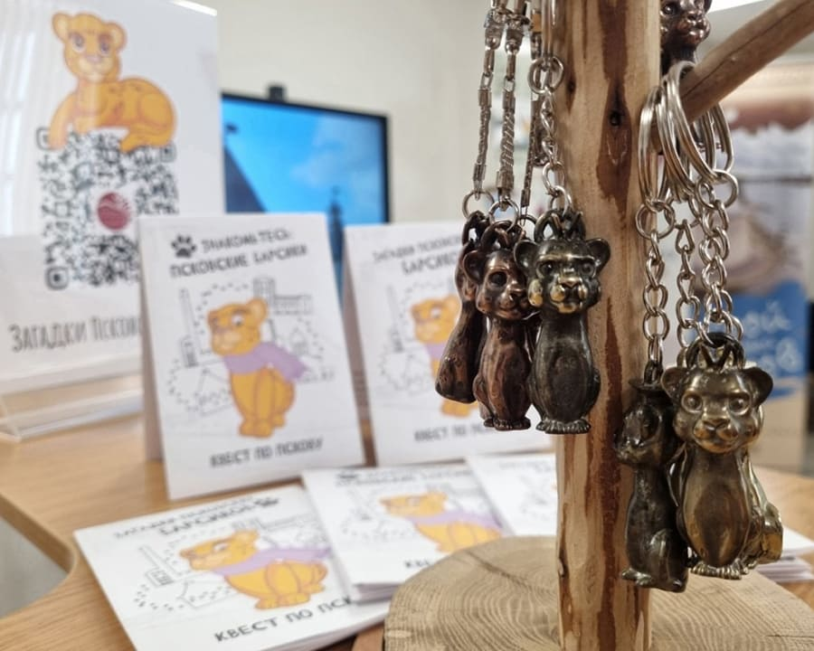
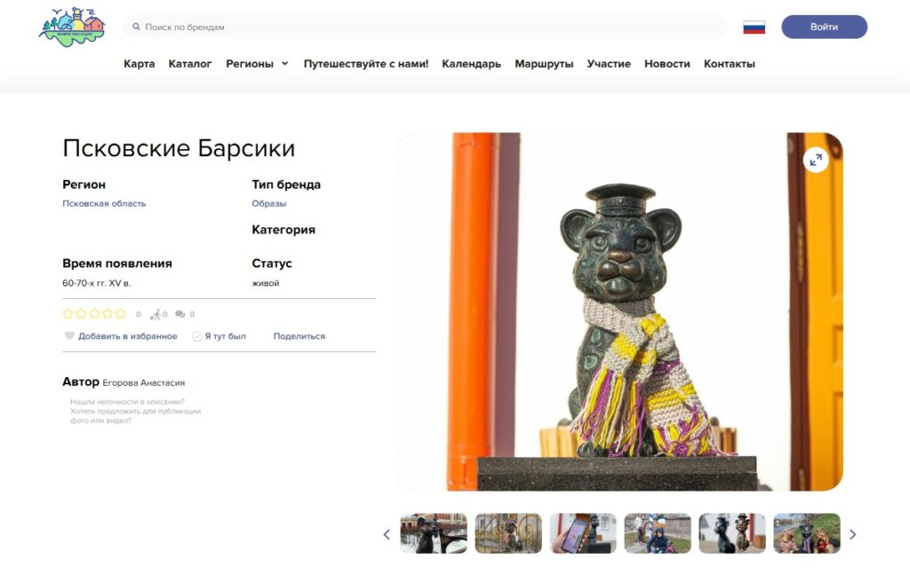

городской бренд
Хранители Пскова
Одежда, маршруты и городские символы, вдохновлённые псковскими Барсиками, историей города и образом барса. Бронзовые герои превращаются в коллекцию одежды, сувениров и прогулок по Пскову.
903
регион 60
барс как городской символ

903
первое упоминание Пскова
Коротко о проекте
Городская прогулка, в которой история становится ближе
Барсики появились в ключевых местах Пскова и превратили привычный маршрут по центру в коллекцию маленьких открытий.
Старт в декабре 2023
На улицах Пскова начали появляться скульптурные композиции с художественным образом БАРСика — символа города.
Бронзовое литьё
Первые композиции выполнены в технике бронзового литья и вручную доработаны, поэтому каждая фигурка выглядит живой.
История в деталях
Книга, камера, молоток, маски, студенческий билет или скейт помогают понять, с кем и с чем связан каждый Барсик.
Городской маршрут
Фигурки стоят рядом с театром, судами, университетом, храмами, башнями, рекой и другими важными точками Пскова.
капсульная коллекция
Линейка одежды «Хранители Пскова»
Современные вещи с историческим смыслом: барс как символ города, 903 как первое упоминание Пскова и 60 как региональный код. Это не просто принт на одежде, а аккуратный городской сувенир, который можно носить каждый день.
Псков можно взять с собой — в деталях, символах и спокойной городской эстетике.
Смотреть коллекциюМаршрут
Маршрут по барсикам
Стилизованная линия прогулки: от литературных историй и городских башен до суда, университета, молодёжного дома и реки.
Городское приключение
Квест по псковским барсикам
Квест стартовал 1 мая 2024 года. Коды для прохождения находятся рядом с фигурками, а версии рассчитаны и на детей, и на взрослых.
история города
поиск фигурок
семейная прогулка
Начать прогулку

Коды на точках
Ищите квестовые коды рядом с фигурками на маршруте.
Сувениры и культурный бренд
Барсики стали частью городского характера
Жители полюбили фигурки: им вяжут шарфики и шапочки, выпускают сувениры, а истории о Барсиках превращаются в мультфильмы в технике покадровой анимации.
шарфики и шапочки
сувениры
живое наследие
анимация



Галерея
Бронзовые характеры крупным планом
Фотографии из статьи PskovKid.ru: откройте снимок, чтобы рассмотреть детали.
Пора на прогулку
Найди своего Барсика в Пскове
Прогулка по барсикам — это короткий маршрут по истории, культуре и современным символам города.